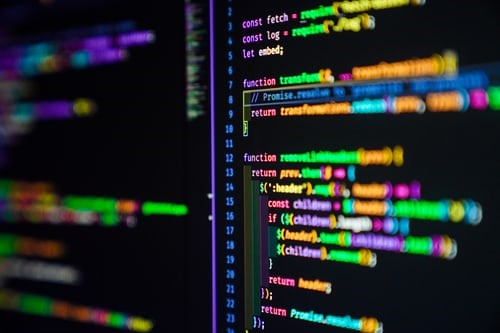

De opleiding Back-end Developer is geschikt voor iedereen die graag met de back-end van websites wil werken.
De back-end van een website bestaat uit verschillende onderdelen. Deze onderdelen zijn niet zichtbaar voor gebruikers,
maar zijn wel van essentieel belang. Een goed geprogrammeerde back-end zorgt voor een soepele gebruikservaring.
In de opleiding Back-end Developer leer je alles wat je moet weten om de verantwoordelijkheid over de back-end van een website te dragen.
Je begint met de basisprincipes van webdesign.
Je gaat aan de slag met de structuur van een HTML-pagina, het structureren van tekst, het toevoegen van links en het gebruik van afbeeldingen
, tabellen en formulieren.
Vervolgens ga je aan de slag met basiskennis over de opmaaktaal CSS en leer je over responsive design,
animaties en Bootstrap. Daarna besteden we aandacht aan onder meer user experience, wireframes, JavaScript en privacywetgeving.
Back-end developers zijn vaak gespecialiseerd in een bepaalde programmeertaal.
In deze Back-end Developer opleiding gaan we uit van de programmeertaal Python:
een van de meest populaire en toegankelijke programmeertalen die er is, zeker voor het programmeren van een back-end.
Een back-end programmacode is, zeker voor een beginner,
een ingewikkelde en vaak ook omvangrijke code. Gelukkig bestaan er frameworks,
die het schrijven van zo’n code aanzienlijk gemakkelijker kunnen maken. In deze opleiding maak je kennis met het Python-framework Django.
Veel organisaties maken tegenwoordig gebruik van de Agile-werkwijze.
Als back-end developer maak je dan deel uit van een Scrum Team.
In dit onderdeel van de Back-end Developer opleiding maak je kennis met de basisbeginselen van werken volgens de Agile-principes.